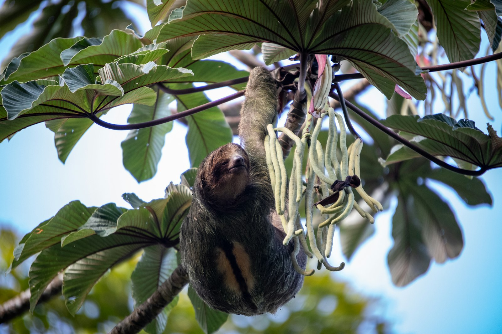
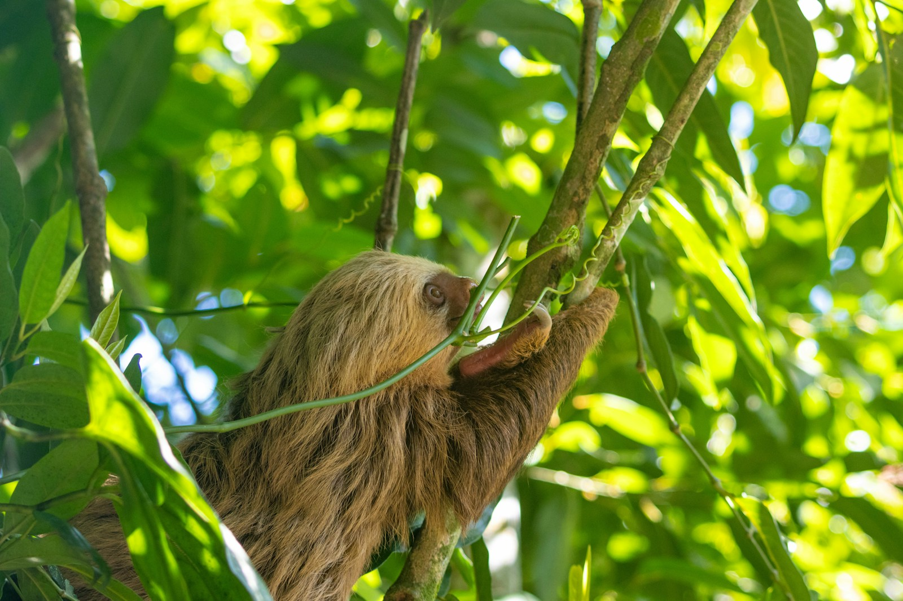

Amazon Field Guide · Wildlife No. 02
Sloth: The Amazon’s Slow Canopy Specialist
It looks half-asleep, hanging upside down like a fuzzy comma. Meet the mammal that turns leaf mush into camouflage, algae gardens, and one of the rainforest’s quietest survival tricks.

Imagine climbing into the Amazon canopy and finding a creature so still you almost mistake it for a clump of moss. That is often how you meet a sloth. It moves only about 40 metres in a whole day—a little longer than a basketball court—while monkeys rocket past and birds chatter overhead. Slow does not mean lazy. Slow means careful, thrifty, and brilliantly built for a leafy life.
Six living sloth species split into two groups: three-toed sloths in the genus Bradypus and two-toed sloths in Choloepus. Across much of the Amazon, the brown-throated three-toed sloth is the common face of the family, while Linnaeus’s two-toed sloth prefers wetter forests in places like Peru, Ecuador, and northern Brazil. Adults are usually 45–60 centimetres long and weigh between about 3 and 9 kilograms—lighter than many school bags, yet strong enough to hang for hours.
Life hanging in the green roof
Sloths spend roughly 90 percent of their lives inverted in the mid and upper canopy. Their forelimbs are about twice as long as their hind limbs, and their claws curve like grappling hooks. Three-toed sloths often roam only 5–6 hectares and stick to a few favourite trees, including cecropia. That tiny home range is part of the plan: if you eat tough leaves all day, you cannot afford long journeys.
Their body temperature drifts with the weather more than yours does. Scientists call this kind of flexible warmth semi-poikilothermic. When the air cools below about 24°C, the microbes that help digest leaves slow down, so the sloth rests more. Energy is precious. A similar-sized mammal on the ground might burn three times as much fuel just staying warm and busy.
“A sloth’s fur can host moths and green algae—turning one animal into a tiny, travelling forest garden.”
More than a sleepy face
Sloths are extreme folivores: new leaves, buds, and the odd flower make up most meals. Digestion can take a full month inside a four-chambered stomach packed with cellulose-cracking microbes. Once a week, many three-toed sloths climb carefully to the ground to defecate. That risky trip feeds moths living in their fur. When moths die and break down, they fertilise algae that the sloth later licks for extra nutrients—a three-way partnership between mammal, insect, and plant.
By spreading cecropia seeds in dung and carrying unique insects in their coats, sloths act like mobile mini-ecosystems. Their weekly nutrient dumps help tree roots and forest-floor fungi. Protecting continuous canopy protects more than one cuddly-looking mammal; it protects a whole hanging neighbourhood of life.
How a sloth turns leaves into energy
- Pick tough greens. The sloth chooses young leaves and buds that look soft but still hold little sugar—food that would leave most mammals hungry.
- Chew, then wait. A four-chambered stomach houses microbes that crack cellulose. Digestion may take weeks, so the animal stays still to save energy.
- Match the weather. Body temperature floats with the air. Warm days speed gut microbes; cool snaps slow everything down.
- Feed the fur garden. Weekly dung trips nourish moths whose remains fertilise algae—extra lipids the sloth can lick from its own coat.
Five things that make a sloth a survivor
- Hooked claws and long forelimbs lock the body to branches so hanging costs almost no muscle effort.
- Backward-growing fur sheds rain and grows camouflage algae that blur the outline among leaves.
- Nine neck vertebrae (in three-toed species) let the head turn nearly 270° to watch for eagles without moving the body.
- Ligaments anchor organs to the ribs so lungs are not crushed while the animal hangs inverted.
- A thrifty, weather-linked metabolism stretches scarce leaf calories across long, quiet days.

Trouble ahead—and reasons to hope
About 17 percent of the Amazon’s original forest has been cleared since the 1970s. Sloths need continuous canopy. When trees vanish, animals are forced to crawl across roads and pastures. Ground crossings can mean up to 90 percent mortality from dogs and cars. Highways such as Brazil’s BR-319 act like barriers; roadkill surveys in Pará have recorded about three sloth carcasses per kilometre in peak dry season.
Illegal pet trade and “selfie tourism” add more pressure. Captured juveniles may sell for little money, yet many die within months from stress and the wrong food. Hotter, drier seasons also mess with the temperature–digestion partnership that keeps gut microbes working. Isolated populations, such as coastal maned sloths in tiny forest scraps, face inbreeding and fire risk.
Hope looks like canopy bridges and forest corridors across cattle country—places where females with infants have already been filmed using new overpasses within weeks. Indigenous-managed reserves still hold some of the densest sloth populations and the lowest trafficking rates. Tourist campaigns reminding people that selfies are not worth an animal’s suffering have cut harmful social-media handling posts sharply since 2020. Keep the green roof connected, and these suspended specialists can keep hanging on.

Odd facts
Word bank
- Canopy
- — the leafy “roof” of the rainforest formed by treetops.
- Folivore
- — an animal that eats mainly leaves.
- Mutualism
- — a partnership where different species help one another survive.
- Semi-poikilothermic
- — having a body temperature that partly follows the weather.
- Habitat fragmentation
- — when continuous forest is broken into isolated scraps.
- Cellulose
- — the tough material in plant cell walls that is hard to digest.
Where this came from
- Animal Diversity Web — Brown-throated three-toed sloth
- WWF — Sloth
- Sloth Conservation Foundation — IUCN status
- Sloth Conservation Foundation — Diet & digestion
- Royal Society — Sloths, moths & mutualisms
- Amazon Aid — Three-toed sloth
- World Animal Protection — Illegal trade
- Conservation Corridor — Canopy connectivity